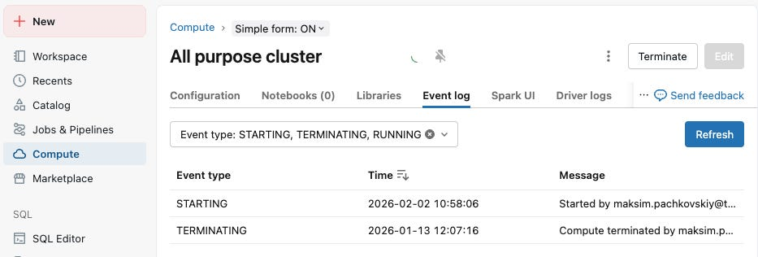
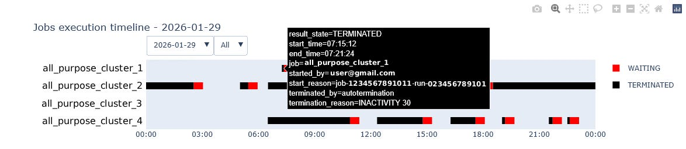
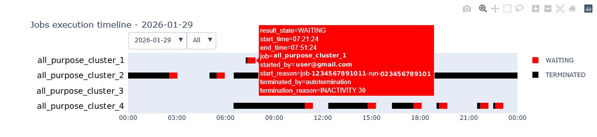
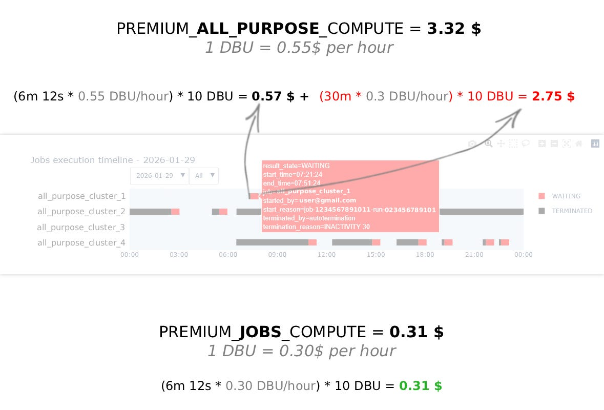

All-purpose compute is useful for notebooks, exploration and interactive work. It is often a poor fit for scheduled scripts. A job can complete in a few minutes, then the cluster can stay on until its auto termination timer expires.
The cluster page shows whether compute is running or stopped. It does not clearly separate useful work from the waiting period before shutdown. This makes idle cost hard to spot across a workspace.
The problem: development compute becomes scheduled production compute
A developer often creates a script on an all-purpose cluster, tests it there, then schedules the same script against that existing cluster. The first run succeeds, so the configuration can look correct. But each later run keeps the higher-cost interactive cluster alive until its auto termination period ends.
This is an easy mistake to repeat. The job owner may not own the cluster settings, and the platform team may see only total uptime. The result is a scheduled workload paying for interactive compute and idle waiting time.
What to look for
All-purpose compute
Built for interactive workIt stays available after activity stops, based on the configured auto termination period.
Jobs compute
Built for scheduled workIt is created for the run and released when the task completes.
A common pattern is simple: a developer tests a script on an all-purpose cluster, then schedules that same script on the same cluster. A six minute run followed by a thirty minute timeout pays for thirty six minutes of cluster time. The wait can cost far more than the task itself.
Use cluster events for a current report
System tables can be useful for historical analysis, but their data can arrive later. For a near-current report, query the Databricks Clusters API. List the workspace clusters, then request each cluster's start and termination events for the reporting window.

report_time_zone = "America/New_York"
report_days = 10
clusters = workspace_client.clusters.list()
events = workspace_client.clusters.events(...)Pair each startup with the later termination event. Convert the timestamps to the report time zone. The resulting intervals show when each all-purpose cluster was available. Group them by date, team or cluster owner so that the people who can change the setting can see the result.



Prevent the mistake with policies
Monitoring finds existing waste. Policies stop the same pattern from returning. Use workspace policies to prohibit scheduling jobs on all-purpose clusters, and require jobs compute for scheduled production work. Keep all-purpose compute available for the interactive work it is designed for.
A clear policy makes the preferred path the easy path: developers can still explore and debug, while scheduled tasks use isolated compute that ends with the run. Document the exception process for workloads that genuinely need a shared interactive cluster.
Turn the report into action
- Move repeatable scheduled work to jobs compute where it fits.
- Use policies to block new scheduled jobs on all-purpose clusters.
- Reduce overly long auto termination values on all-purpose clusters.
- Disable old schedules and review clusters with repeated idle intervals.
- Share the report with cluster owners before making workspace-wide changes.
In one set of projects, this view exposed short tasks followed by long idle windows, inactive schedules and clusters with an excessive timeout. Addressing those cases reduced compute cost by 20 to 30 percent per month.